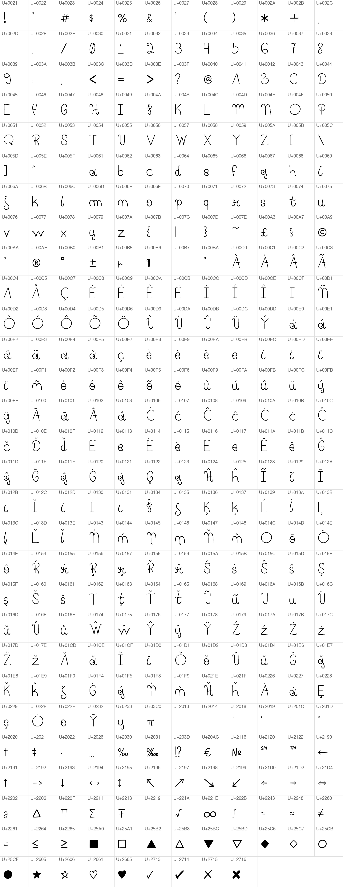

Minha letra.
Agora, uma fonte.
Pedro Hand é minha caligrafia transformada em uma fonte funcional. Uma marca pessoal que saiu do papel e chegou a O Tirano e a este portfólio.
Escreva uma ideia.
Uma ideia simples, com a minha cara.
Eu gosto da minha letra e, um dia, surgiu a ideia de transformá-la em uma fonte. Achei que seria um projeto autoral interessante para o portfólio — e uma forma de levar algo meu para os projetos digitais.
- Escrita. O ponto de partida é a própria caligrafia: letras com um desenho pessoal, feito à mão.
- Digitalização. Os caracteres saem do papel para se tornar material de trabalho digital.
- Vetorização. Os contornos dos caracteres ganham uma forma que pode ser editada e ampliada.
- Glifos e organização. Letras, números e símbolos são organizados dentro da fonte.
- Aplicação. A fonte é exportada em formatos funcionais e utilizada no jogo e neste site.
Pequenas formas. Uma identidade inteira.

A mesma letra em novos lugares.
Em O Tirano, a Pedro Hand participa da identidade do jogo. Aqui, aparece em títulos e pequenas intervenções, mantendo os textos longos em uma tipografia de leitura confortável.
A fonte existe como arquivo instalável e como fonte para a web. Você pode experimentar a versão acima ou baixar o arquivo TTF.
Baixar Pedro Hand · TTF ↓Fonte autoral de Pedro Henrique Santos Garcia. O download não concede uma licença de redistribuição ou uso comercial.